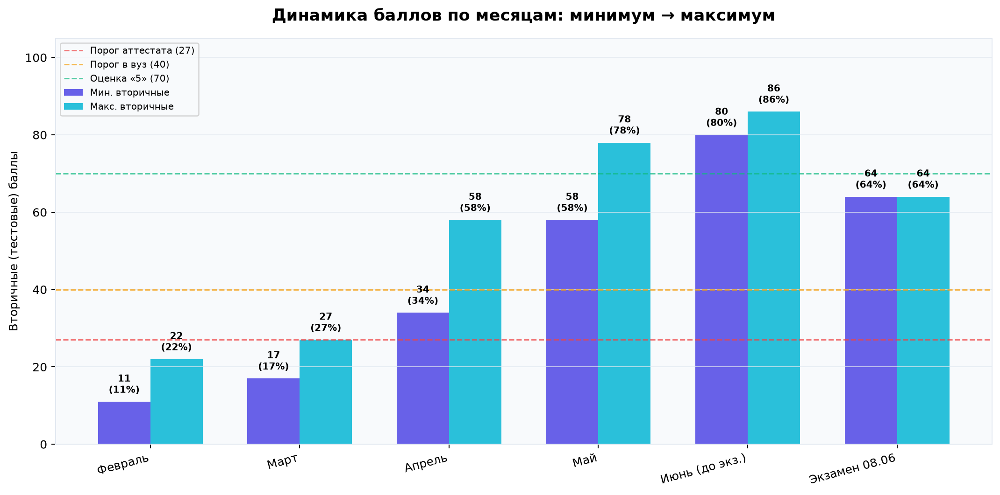
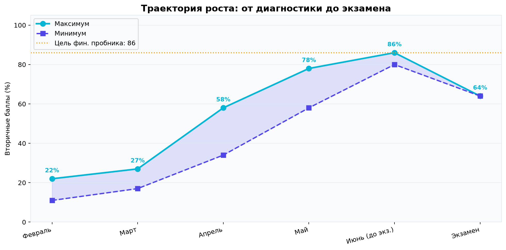
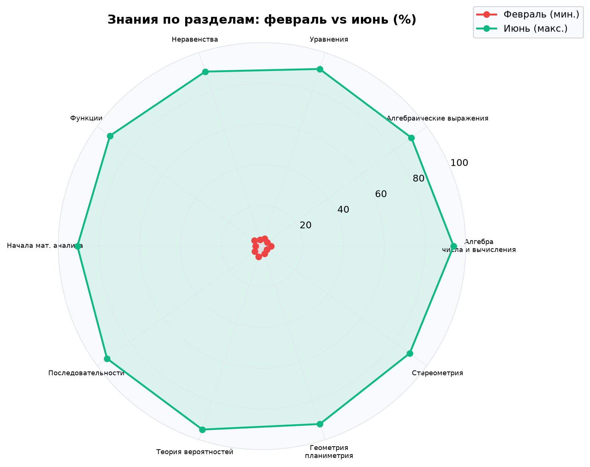
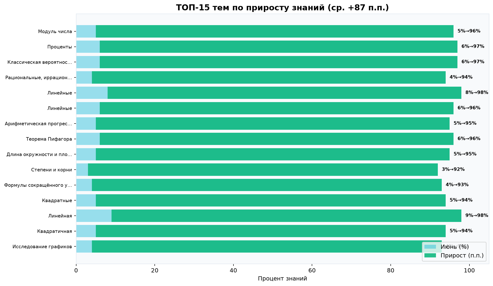
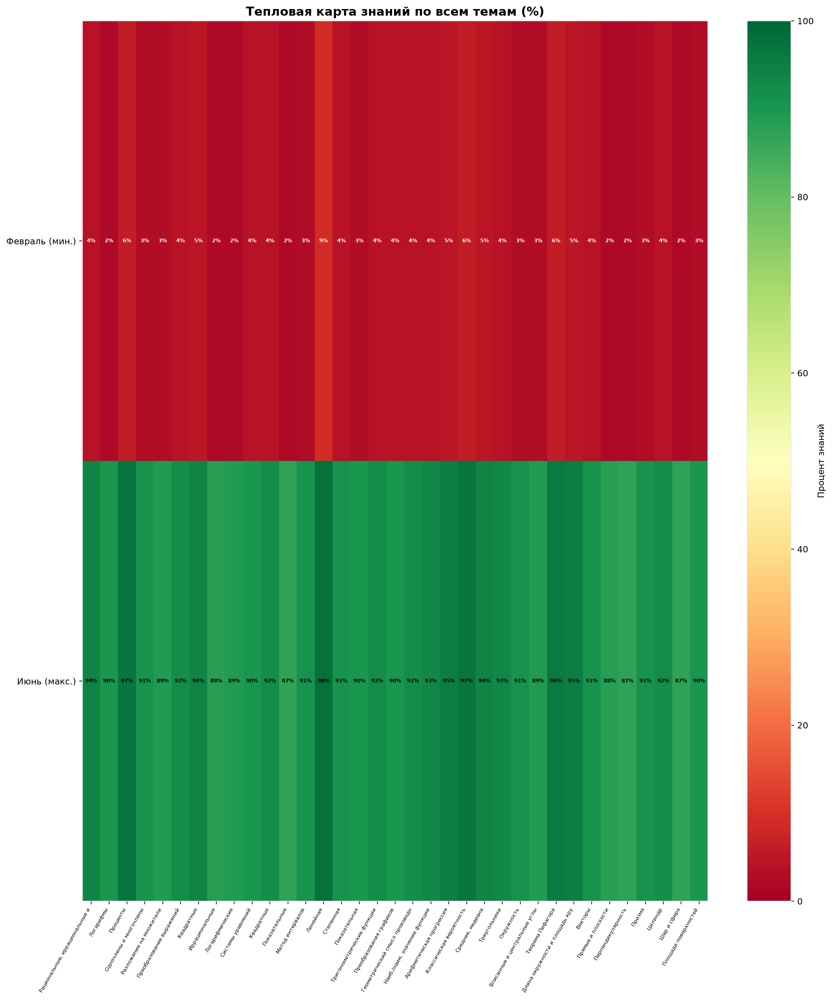
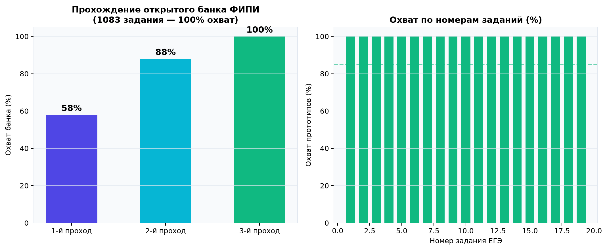
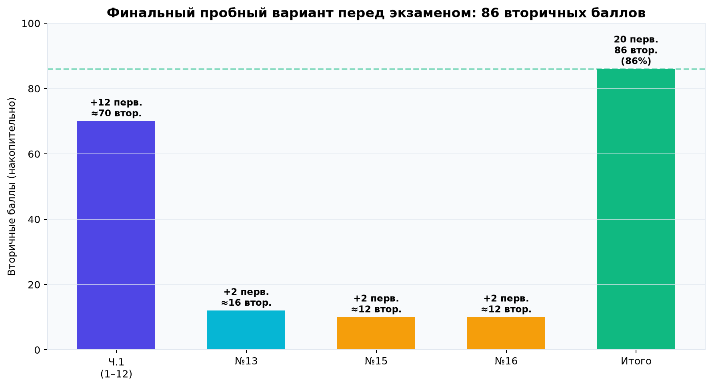
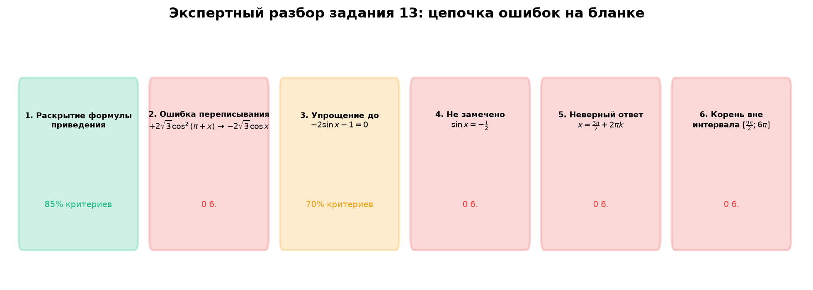
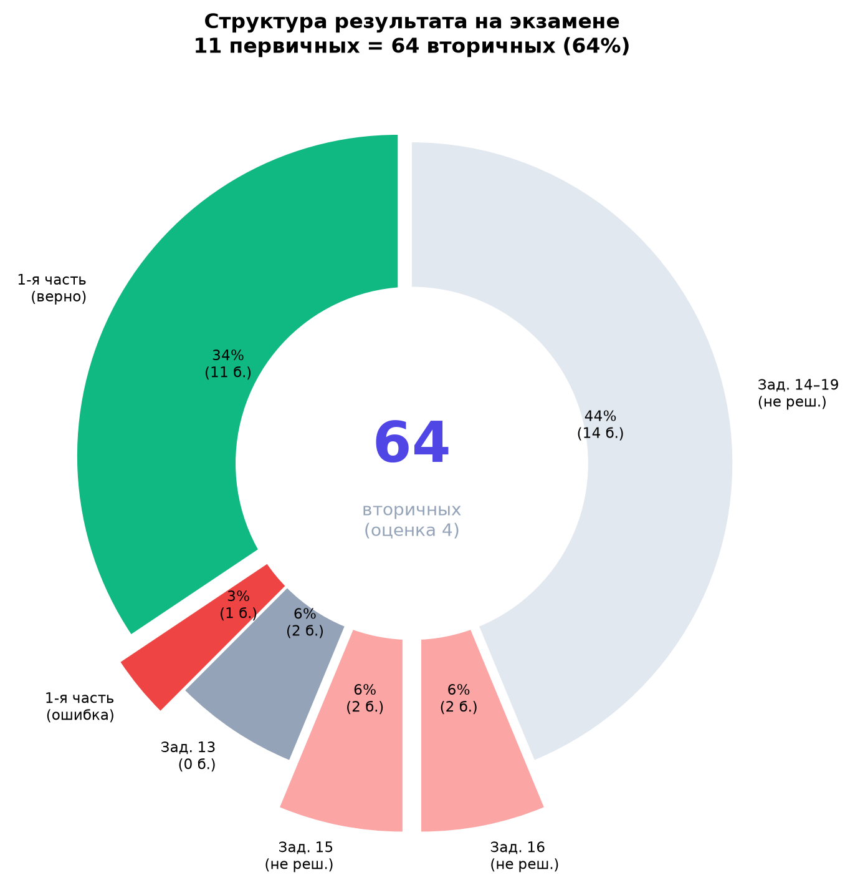

Минимальные и максимальные результаты на контрольных и пробниках. Вторичные баллы — по официальной шкале ЕГЭ-2026 (30 первичных = 100 вторичных). Условная школьная оценка: «2» — 0–26, «3» — 27–49, «4» — 50–69, «5» — 70+.
Февраль–март: низкие баллы — идёт ликвидация пробелов 7–9 кл., не формат ЕГЭ. Апрель–июнь: реальная подготовка к экзамену — резкий рост.
| Месяц | Мин. перв. | Макс. перв. |
Мин. втор. | Макс. втор. |
Мин. % | Макс. % | Оценка |
|---|---|---|---|---|---|---|---|
| Февраль | 2 | 4 | 11 | 22 | 11% | 22% | 2 – 2 |
| Март | 3 | 5 | 17 | 27 | 17% | 27% | 2 – 3 |
| Апрель | 6 | 10 | 34 | 58 | 34% | 58% | 4 – 4 |
| Май | 10 | 16 | 58 | 78 | 58% | 78% | 4 – 5 |
| Июнь (до экз.) | 17 | 20 | 80 | 86 | 80% | 86% | 5 – 5 |
| Экзамен 08.06 | 11 | 11 | 64 | 64 | 64% | 64% | 4 |


| Перв. | Втор. | % | Оценка |
|---|---|---|---|
| 5 | 27 | 27% | 3 |
| 7 | 40 | 40% | 4 |
| 11 | 64 | 64% | 4 |
| 12 | 70 | 70% | 5 |
| 20 | 86 | 86% | 5 |
| 30 | 100 | 100% | 5 |
| Задание | Баллы |
|---|---|
| №1–12 | по 1 |
| №13, 15, 16 | по 2 |
| №14, 17 | по 3 |
| №18–19 | по 4 |
| Итого | 32 |
Формально занятия шли с февраля по июнь — 5 месяцев. Но фактически непосредственная подготовка к прототипам ЕГЭ заняла последние 2 месяца (апрель — июнь). Первые 2 месяца ушли на ликвидацию пробелов, накопленных ещё с 7 класса.
На пробном занятии выявлен крайне низкий уровень знаний. Диагностика показала, что значительная часть базовых тем — дроби, степени, простые уравнения, элементы геометрии, проценты — не усвоены или забыты, начиная ещё с программы 7 класса.
Чтобы перейти к решению прототипов из открытого банка ФИПИ, необходимо было сначала восстановить фундамент — пройти темы прошлых лет, без которых большинство заданий ЕГЭ просто не решаются. Именно этим и занимались первые два месяца:
На этом этапе результаты пробников оставались низкими (11–27 вторичных баллов) — это нормально, потому что мы ещё не выходили на формат ЕГЭ, а закрывали дыры в базовой математике.
Ликвидация пробелов с 7–9 класса. Стартовый уровень — 11–17% по темам. К ЕГЭ-прототипам не переходили.
Реальная подготовка к ЕГЭ: прототипы ФИПИ, полные варианты, 2-я часть. Рост с 34% до 86% на пробнике.
Только после восстановления базы началась системная работа с открытым банком ФИПИ: задания 1–12, затем 13, 15, 16, полные варианты, пробники. Именно за эти 2–2,5 месяца произошёл основной скачок — с 34 до 86 вторичных баллов на финальном пробнике.
Параллельно Вячеслав очень долго не хотел учить теорию — формулы, свойства, определения откладывались систематически. Для мотивации я разработал специальный метод карточек и создал отдельный сайт, чтобы ему было удобно учить материал с телефона. Несмотря на это, к карточкам и теории он приступил только в последние недели перед экзаменом.
Я разработал индивидуально: формулы, свойства, типовые шаги — в формате быстрых карточек для повторения.
Я создал персональный сайт для удобного изучения теории — адаптивный, с прогрессом по темам.
До последних недель теория фактически не изучалась. Домашние работы по теории выполнялись нерегулярно.
Многие домашние задания выполнялись в школе между уроками — поверхностно и без погружения. До последних дней Вячеслав продолжал ходить в школу, где учитель математики давал:
В последние месяцы было предложено отодвинуть школу на второй план и посвятить освободившееся время самоподготовке по программе ЕГЭ. Этого сделано не было.
В какой-то момент Вячеслав захотел повторно пройти первую часть — отработать задания 1–12 ещё раз. Я понимал, что при оставшемся времени важнее уделить часы второй части (номера 13, 15, 16 и далее), где как раз не хватало уверенности.
После того как я набросал план подготовки на оставшийся период, стало ясно: чтобы успеть и закрепить 1-ю часть, и выйти на 2-ю, нужно увеличить количество занятий на 10 часов. Я предложил этот вариант Светлане.
Светлана посоветовалась со Славой, и в итоге было принято решение добавить только 5 дополнительных часов — вдвое меньше необходимого. При этом это произошло лишь в начале мая (около 10-го числа) — менее чем за месяц до экзамена, когда времени на полноценную доработку уже было критически мало.
На пробном занятии в феврале проведена масштабная диагностика по всем темам кодификатора. Стартовый уровень — 2–9% по большинству тем (пробелы с 7 класса). К июню — 87–98%. Средний прирост по всем темам: +87 процентных пунктов.



По актуальному сборнику (обновление 03.06.2026) открытый банк содержит 1083 задания и 468 прототипов по 19 номерам. Банк регулярно пополняется — фиксированного размера нет.
За период подготовки банк пройден 3 раза (полный → тематический → финальный цикл). Итоговый результат: 100% охват — ни одно задание не было упущено. Каждый из 1083 прототипов разобран на занятиях или в домашней работе.

Утром 8 июня полностью разобран вариант Дальнего Востока. Совпадение с центральным вариантом — 87%. Совпали задания 1–12, 13, 15 и 16.
На финальных пробниках (1-я часть + №13, 15, 16): 20 первичных = 86 вторичных (86%, оценка «5»).

Вячеслав знал материал — это подтверждают пробник на 86 баллов и разбор утром 8 июня. На экзамене он допустил ошибки не из-за незнания, а из-за невнимательности, страха перед заданиями и непереноса решений с черновика.
| № | Ответ на бланке | Статус | Комментарий |
|---|---|---|---|
| 1 | 56 | Верно | Планиметрия |
| 2 | 13 | Верно | Векторы |
| 3 | 72 | Верно | Стереометрия |
| 4 | 0,3 | Верно | Вероятность |
| 5 | 0,18 | Верно | Вероятность |
| 6 | 8 | Верно | Уравнения |
| 7 | 8 | Верно | Преобразования |
| 8 | 5 | Верно | Производная и график |
| 9 | 16 | Ошибка | Прикладная — см. разбор ниже |
| 10 | 14 | Верно | Текстовая задача |
| 11 | −21 | Верно | Анализ графика |
| 12 | 196 | Верно | Экстремумы |
Итог 1-й части: 11 из 12 (91,7%). Единственная ошибка — задание №9.
После включения телевизора на высоковольтном конденсаторе (ёмкость \(C = 2 \cdot 10^{-6}\) Ф, сопротивление \(R = 5 \cdot 10^{6}\) Ом) появляется напряжение \(U_0 = 16\) кВ. При выключении ТВ происходит разряд. Время \(t\) (с) разряда определяется формулой:
$$t = \alpha \cdot R \cdot C \cdot \log_2 \frac{U_0}{U}$$где \(\alpha = 0{,}7\) — постоянная. Определить напряжение \(U\) (кВ) на конденсаторе через \(t = 21\) с.
За 12 дней до экзамена Вячеслав решил эту задачу на занятии — с идентичными коэффициентами. На экзамене записал 16 вместо правильного ответа 2.
Записано начальное напряжение \(U_0\), а не результат
Решено 27.05 с теми же числами

Задание не вынесено на бланк, хотя утром 8 июня было полностью разобрано.
Как выяснилось после проверки, Вячеслав не переписал таблицу с черновика на чистовой бланк. При этом до проверки утверждал, что написал решение.

| Задание | Макс. | Набрано | Потеряно | Причина |
|---|---|---|---|---|
| №9 | 1 | 0 | 1 | Записал \(U_0=16\) вместо \(U=2\) |
| №13 | 2 | 0 | 2 | Ошибка переписывания уравнения |
| №15 | 2 | 0 | 2 | Не вынес (страх, 2 действия) |
| №16 | 2 | 0 | 1* | Таблица не переписана с черновика |
| Итого упущено | 6 | Потенциал: 17 перв. = 80 втор. |
* По №16: решение на черновике было, но таблица не перенесена — упущен 1 балл из 2 возможных.
№9: записал число из условия (\(U_0=16\)) вместо ответа. №16: не переписал таблицу с черновика. №13: ошибка при переписывании формулы.
№15 и №16 — не вынесены на бланк, хотя решались на занятии и разбирались утром. Типичная реакция: «знаю, но боюсь начать».
Пробник: 86 баллов (оценка «5»). Экзамен: 64 (оценка «4»). Разрыв — не в знаниях, а в экзаменационной дисциплине.
Подготовка дала реальный, измеримый результат: средний прирост +87 п.п. по темам, 100% банка ФИПИ пройдено без пропусков, финальный пробник — 86 баллов (оценка «5»), на экзамене — 11/12 в первой части. Разрыв между пробником (86) и экзаменом (64) — следствие невнимательности и страха на экзамене, а не недостатка подготовки.
| Показатель | Первичные | Вторичные | % | Оценка |
|---|---|---|---|---|
| Диагностика (мин.) | 2 | 11 | 11% | 2 |
| Диагностика (макс.) | 4 | 22 | 22% | 2 |
| Финальный пробник | 20 | 86 | 86% | 5 |
| Экзамен 08.06 | 11 | 64 | 64% | 4 |
| Потенциал (пробник) | 17 | 80 | 80% | 5 |
Когда ко мне пришёл Вячеслав, его уровень математики был критически низким — многие темы с 7–8 класса не были усвоены. За формальные 5 месяцев работы мы прошли путь от «не знает базовую алгебру» до «решает полный вариант ЕГЭ на 86 баллов». Это объективно ошеломляющий результат, особенно с учётом того, что непосредственно к формату ЕГЭ готовились фактически 2 месяца.
На занятиях был пройден весь открытый банк ФИПИ — 1083 задания, три полных цикла, без единого пропуска. Средний прирост знаний по темам составил +87 процентных пунктов. Для мотивации к теории я разработал метод карточек и персональный сайт. Когда стало ясно, что без дополнительных занятий не обойтись, я предложил Светлане +10 часов; после совета со Славой добавили лишь 5 часов, и только с начала мая — менее чем за месяц до экзамена.
Результат на экзамене — 64 балла, оценка «4» — ниже пробника (86), но это объясняется исключительно поведением на экзамене: невнимательность (записал 16 вместо 2 в задании, которое решал 12 дней назад), страх (не вынес задания 15 и 16, разобранные утром), небрежность (не переписал таблицу с черновика). Все эти ошибки — не про незнание, а про экзаменационную дисциплину.
Факт остаётся фактом: ученик, который в феврале едва решал линейные уравнения, в июне стабильно набирал 86 баллов на пробниках и сдал ЕГЭ на 64 балла с оценкой «4». Это результат интенсивной, системной работы — и он говорит сам за себя.
+87 п.п. прирост знаний · 100% банка ФИПИ · 86 баллов на пробнике · 64 на экзамене · 11/12 в первой части · +5 ч. с ~10 мая (предложено +10)